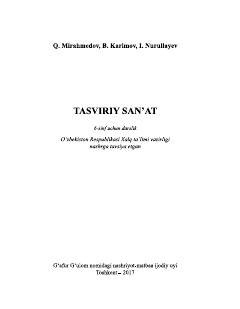

TS6-sinf o'quvchilari uchun tasviriy san'at fanidan rasmiy darslik.
Mazkur darslik umumta'lim maktablarining 6-sinflari uchun tasviriy san'at fanidan davlat ta'lim standarti va o'quv dasturi asosida tuzilgan. Unda inson qaddi-qomatini chizish, Sharq miniatyura san'ati, rangtasvir va portret janri bo'yicha nazariy hamda amaliy bilimlar berilgan.